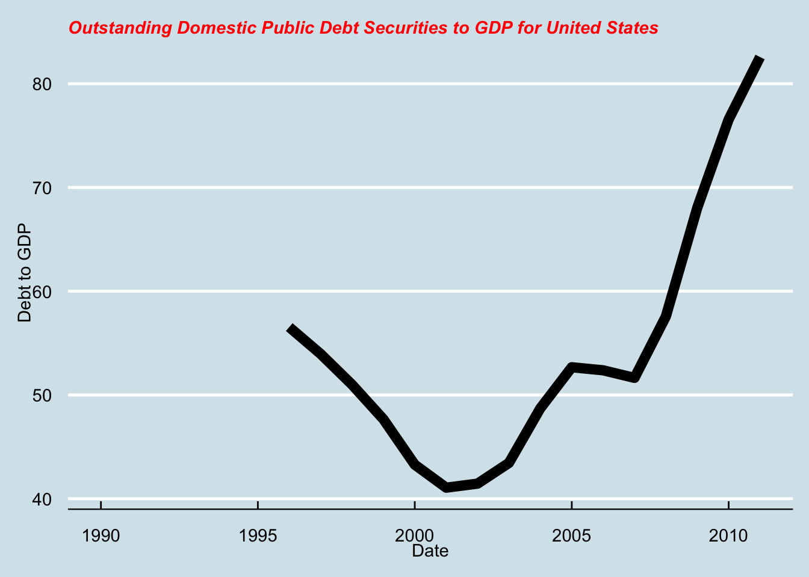

Downloading the FRED data on national debt as a percentage of GDP. I first want to examine the US data and will then turn to some comparisons. fredr makes it markable asy to do! I will use two core tools from fredr. First, fredr_series_search allows one to enter search text and retrieve the responsive series given that search text. They can be sorted in particular ways, two such options are shown below. In the first chunk, I will download the “national debt” data and show the top 6 responsive series.
# A tibble: 14 × 2
id title
<chr> <chr>
1 DDDM04USA156NWDB Outstanding Domestic Public Debt Securities to GDP for Unit…
2 DDDM04INA156NWDB Outstanding Domestic Public Debt Securities to GDP for India
3 DDDM04CAA156NWDB Outstanding Domestic Public Debt Securities to GDP for Cana…
4 WLSFAL Liabilities: Deposits with F.R. Banks, Other Than Reserve B…
5 DDDM04CNA156NWDB Outstanding Domestic Public Debt Securities to GDP for China
6 DDDM04LBA156NWDB Outstanding Domestic Public Debt Securities to GDP for Leba…
7 DDDM04JPA156NWDB Outstanding Domestic Public Debt Securities to GDP for Japan
8 WDSFAL Factors Absorbing Reserve Funds: Deposits with Federal Rese…
9 DDDM04BRA156NWDB Outstanding Domestic Public Debt Securities to GDP for Braz…
10 DDDM04GRA156NWDB Outstanding Domestic Public Debt Securities to GDP for Gree…
11 DDDM04IDA156NWDB Outstanding Domestic Public Debt Securities to GDP for Indo…
12 DDDM04SGA156NWDB Outstanding Domestic Public Debt Securities to GDP for Sing…
13 DDDM04MXA156NWDB Outstanding Domestic Public Debt Securities to GDP for Mexi…
14 DDDM04VEA156NWDB Outstanding Domestic Public Debt Securities to GDP for Boli…
Next, I need to acquire the data that I want. I probably should have reversed the order of some of the operations here. For example, I don’t really want the non-domestic public debt but I am not going to filter them before downloading. That’s not great but it isn’t all that much data either. The command fredr aliases the fredr_series_observations command that obtains data directly from FRED. I will use a variant of map to grab the relevant series id above and then join them back to the Search results.
Now let me splice off the United States and plot it.
US.Debt <- dplyr::filter(Debt.Data, grepl('to GDP for United States', title))ggplot(US.Debt, aes(x=date, y=value)) +geom_line(size=3) +theme_economist() +theme(plot.title =element_text(color="red", size=11, face="bold.italic")) +labs(title=US.Debt$title[1], y="Debt to GDP", x="Date")

And because I ended up with a bunch of them; multiple time series plots. To automate this, I will first remove everything that represents liabilities above in the FRB system. Then I need to use the series title to select everything that I want and separate off the country names for labels. The only hard-coding hacks for the final plot are the title. Here’s what we get, with color encoding the country names.